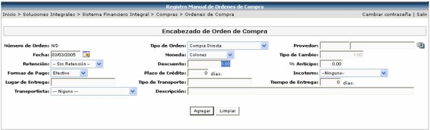
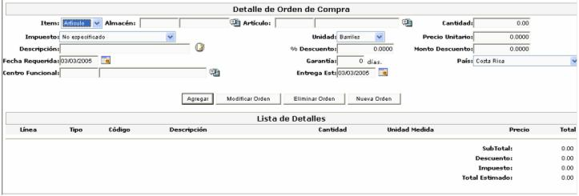

Este proceso permite realizar la creación de órdenes de compra manual o trabajar las órdenes de compra creadas de previo, desde el proceso de Evaluación de cotizaciones; las órdenes de compra manuales se realizan en aquellos casos en que se desea realizar una compra directa o que no involucra una solicitud de materiales o el proceso de cotización hacia proveedores.
También es aquí donde se despliegan las órdenes que se generaron automáticamente en el proceso de Evaluación de Cotizaciones y las solicitudes que se especificaron como Compra Directa.
Para crear una orden de compra manual es necesario llenar cierta información que a continuación se detalla:

Tipo de Orden: se selecciona el formato de impresión deseado para esa orden.
Proveedor: proveedor que atenderá la orden de compra.
Fecha: de creación de la orden.
Moneda: en la que va hacer pagada la orden de compra.
Tipo de Cambio: dado según la moneda seleccionada.
Retención: seleccionar el porcentaje de retención, si es que aplica.
Descuento: monto del rebajo, si es que aplica. Este campo no se puede modificar, ya que es de despliegue de la sumatoria de los montos de descuento por línea de la orden.
% Anticipo: porcentaje que se quiere de anticipo del total de la orden, antes de la fecha requerida.
Forma de Pago: la forma en que va hacer pagada la orden. Dada automáticamente al seleccionar el proveedor.
Plazo de Crédito: va a depender de la forma de pago seleccionada y es dado automáticamente al seleccionar el proveedor.
Incoterm: seleccionar de la lista el incoterm a aplicar.
Lugar de Entrega: lugar donde se va a entregar la mercadería.
Tipo de Transporte: es el trasporte a utilizar para la entrega de la mercadería.
Tiempo de Entrega: tiempo que se durará el proveedor en entregar la mercadería.
Transportista: es la compañía que transportará la mercadería.
Descripción: detalle de las consideraciones que debe de tener dicha orden.
Luego se procede a llenar el detalle de las líneas de la orden de compra, en donde se establecen la lista de bienes o servicios que se adquirirán mediante la orden de compra al momento de ser autorizada:

La información requerida por el sistema para la inclusión del detalle es la siguiente:
Fecha requerida: fecha en la que la empresa requiere la mercadería a comprar.
País: lugar de procedencia de la mercadería, este valor es importante ya que sirve para definir los valores o impuestos de importación por país.
Centro Funcional: al que pertenece dicha mercadería.
Entrega Est: fecha en que se debe de entregar la mercadería.
% Descuento: es el porcentaje de descuento a aplicar por línea e detalle.
Monto Descuento: es calculado automáticamente, según el % de descuento digitado, por línea de detalle.
El resto de la información corresponde a la solicitud de materiales que se desea surtir y que se especificó anteriormente; un aspecto importante a mencionar es que una vez que se creo la orden de compra, se debe de aplicar, a fin de enviarla al proceso de autorizaciones en el área de compras, para poder posteriormente realizar su impresión física.
El proceso de aplicación consiste en verificar si el comprador tiene permiso para aprobar la orden, dependiendo del monto de la orden y el monto máximo que tiene asociado el comprador para poder aprobarla (esto definido en el catálogo de compradores). Si el comprador puede aprobar dicha orden, el sistema compromete el presupuesto que se reservo con anterioridad al crearse la solicitud de compra y le asigna un número de autorización presupuestaria (NAP). Además manda la información de dicha orden al proveedor para que él mismo proceda a la tramitación de la misma.
Si el comprador no tuviera permiso para aprobar la orden, el sistema genera un número de rechazo presupuestario (NRP), verifica la jerarquía del comprador hasta llegar a un comprador con una jerarquía superior que si pueda aprobarla. Cuando dicha orden tiene una Aprobación de OK, el usuario podrá una vez más aplicarla para que se comprometa el presupuesto que se reservo con anterioridad al crearse la solicitud de compra y se manda la información de dicha orden de compra al proveedor para que el mismo proceda a la tramitación de la misma.
Los diferentes Estados en que puede estar una Orden de Compra son:
• Pendiente: se da cuando se está registrando una orden de compra en forma manual.
• Pendiente Vía Proceso: orden generada desde la evaluación de cotizaciones a partir de un proceso de compra.
• Pendiente O.C. Directa: orden generada desde la aplicación de una solicitud de compra de tipo Directa.
• En proceso de Firmas: significa que al comprador que se le asigno la orden de compra, no puede firmarla, por lo que el sistema reasigna dicha orden de compra a otro comprador, según la jerarquía de compras que corresponde a firmarla.
• Rechazada por el Aprobador: esto quiere decir que una vez que entro la orden en el proceso de aprobación de firmas, el usuario responsable de firmarla, rechazo la orden de compra.
• Pendiente Vía Contrato: el sistema generó automáticamente una orden de compra derivada de una solicitud cuyos ítems están incluidos en un contrato, con los términos y condiciones del mismo.
• Pendiente de Aprobación Presupuestal: se da cuando se intenta aplicar una orden de compra.
• Aplicadas: orden de compra aplicada.
• Canceladas Parcialmente Surtidas: quiere decir que la orden ha sido cancelada pero fue parcialmente surtida, por lo que se canceló únicamente las líneas que faltaban por surtir.
• Canceladas: se da cuando se cancela por el proceso de cancelación de órdenes de compra. Cuando se cancela una orden debería cambiarse el estado de las solicitudes de compra de tipo directa.